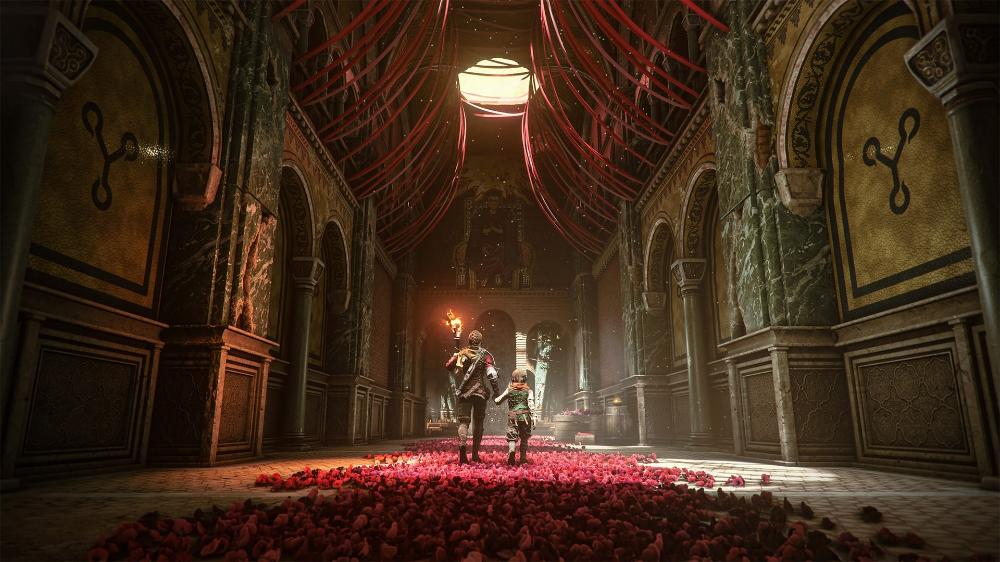
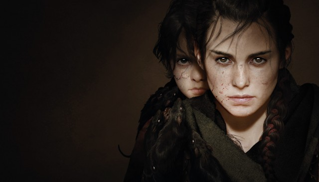

Az A Plague Tale: Requiem egy akció-kalandos lopakodó videojáték, amelyet az Asobo Studio fejlesztett és a Focus Entertainment adott ki. A játék az A Plague Tale: Innocence (2019) folytatása, és Amicia és Hugo de Rune testvéreit követi, akiknek gyógymódot kell keresniük Hugo vérbetegségére Dél-Franciaországban, miközben az inkvizíció katonái és a terjedő patkányhordáka fekete pestis .jelent meg Nintendo Switchre ( felhőverzió ), PlayStation 5 -re, Windowsra és Xbox Series X/S-re. Általában pozitív kritikákat kapott a kritikusoktól. A 2022-es The Game Awards-on öt jelölést kapott, köztük az év játéka díjat .
A Requiem egy akció- kalandjáték, amelyet harmadik személy szemszögéből játszanak . A játékban a játékos átveszi Amicia irányítását, és szembe kell néznie az ellenséges emberekkel és a fekete pestist terjesztő patkányhordákkal . A játékmenet nagymértékben hasonlít az első játékhoz, bár a harcrendszer jelentősen kibővült. Amicia olyan fegyverekkel van felszerelve, mint egy kés az ellenség megszúrásához, egy heveder, amellyel köveket dobhat, és egy számszeríj , amellyel legyőzheti páncélozott ellenfeleit. A számszeríjcsavarok, a dobóedények és a sziklák kombinálhatók alkímiai keverékekkel. Az Ignifer és az Extinguis mellett, amelyek lehetővé teszik a játékos számára a láng meggyújtását, illetve eloltását, a játék bemutatja a tar , amely növeli a fényforrás sugarát, és ellenségek meggyújtására használható. A játék egy továbbhaladási rendszert is tartalmaz, amelyben a játékos további készségeket és képességeket kap. A lopakodó játékosok olyan készségeket tárnak fel, amelyek segítségével hatékonyabban lopózhatnak, míg azok, akik a halálosabb megközelítést részesítik előnyben, további harci képességeket is felszabadíthatnak. A játékos felszerelése és felszerelése a munkapadokon is fejleszthető.
A Requiemet a francia Asobo Studio videojáték-fejlesztő cég fejlesztette ki . Az első játékhoz hasonlóan a játék a középkori Franciaországban játszódik a 14. század közepén . A helyszínek hitelességének biztosítása érdekében a csapat együttműködött Roxane Chilával, a középkori történelem orvosával, és további információkért böngészte a Wikipédiát és más speciális webhelyeket. Emellett néhány csapattag személyes tapasztalataiból is merítettek ihletet. A csapat már korán eldöntötte, hogy a játék színpalettája más lesz, mint az elődje. Ennek eredményeként a játék helyszíne a komor, háború sújtotta Aquitaine- ból a színesebb és élénkebb Provence- ba került. Sébastien Renard vezető író szerint ez "élesebb kontrasztot teremtett a középkori környezet rideg valósága, amelyben szörnyű események történnek, és a gyönyörű, néha feltérképezetlen környezet között". A rejtvényfejtés további lehetőségeinek megteremtése érdekében a játék számos új helyszínt mutat be, köztük kikötőket és piactereket a Requiemben . A szinkronszínészek brit angolul beszélnek, míg az előző játékban francia akcentussal beszéltek angolul.